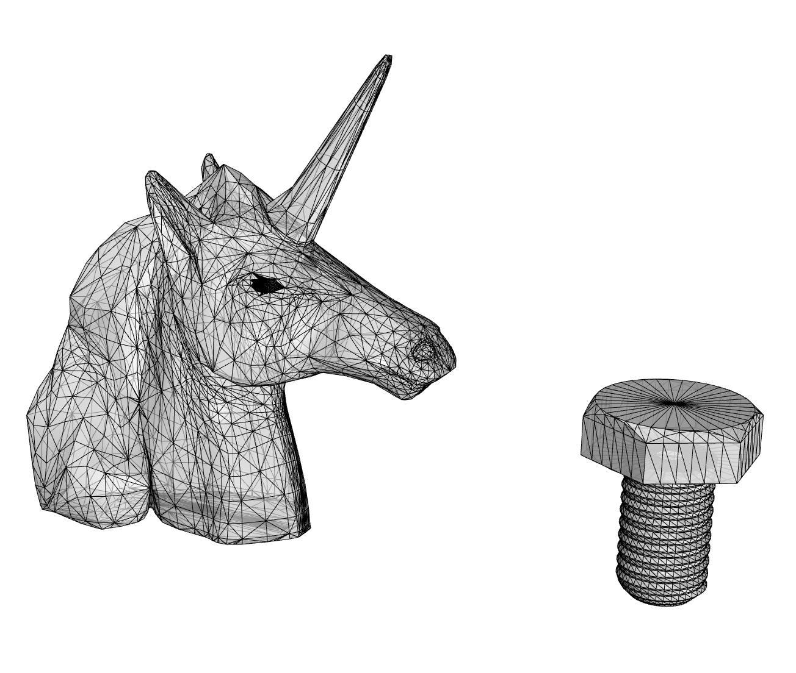
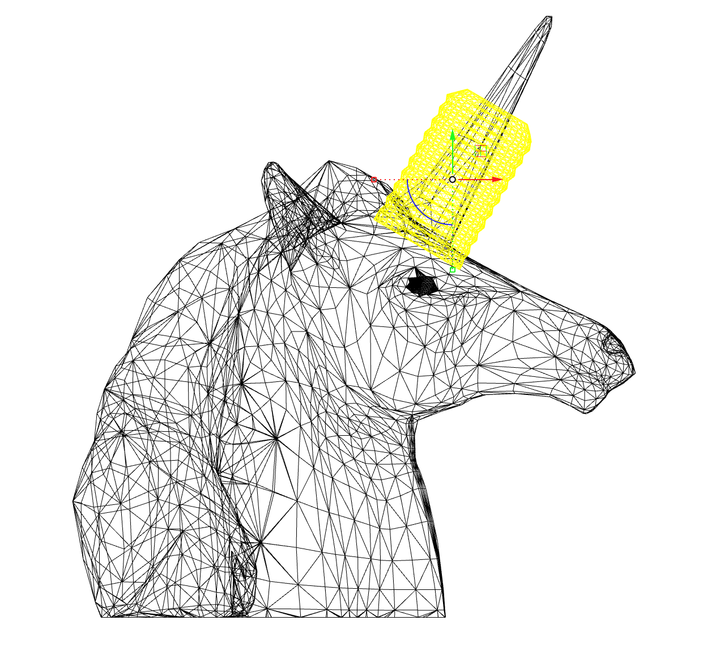
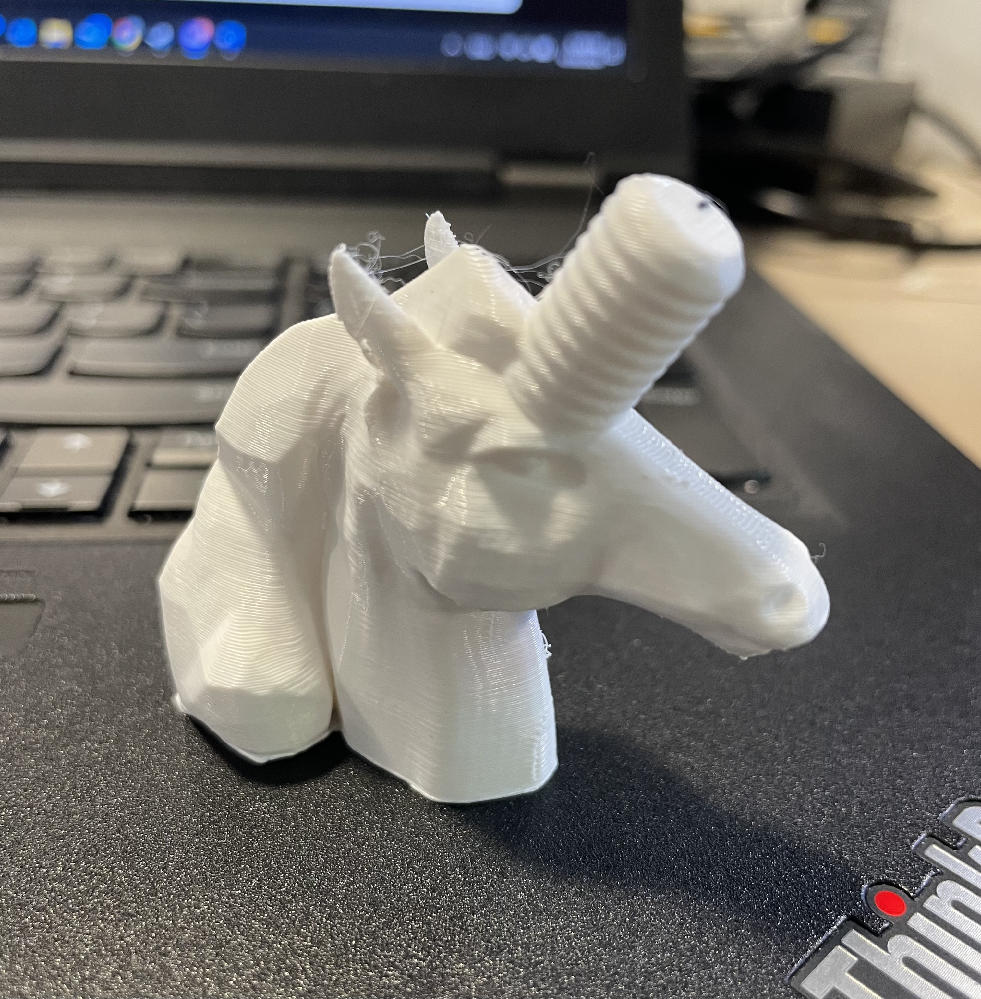

For the mesh assignment, I meshed up a low-poly unicorn model and a screw which replaces the original horn. I used commands like MeshBooleanDifference and MeshBooleanUnion to clean the original horn and join two meshes, and finally I simplified the result by using ReduceMesh.

Original meshes

Meshing up!

Printed model
Lamp design
My inspiration came from a lamp designed by New Craft House which takes the advantage of the thickness of extruded filament to create a weaving pattern. The single wall layer also allows structural flexibility and light penetration.
Baobap Lamp by New Craft HousePrint details by New Craft House
Then I started to create this pattern in Grasshopper. By dividing an original surface into grids, the points on the grid can be group in an alternating pattern by using Cull Pattern on the list. On one row, the points are offsetted to the original position by a distance in the same alternating pattern, which means that, for instance, points with odd number indexes move up and those with even number indexes move down. And for the next row, points with odd and even number indexes do the opposite by using Flip Matrix so they create this weaving effect with porosity.
Weave it in GHGH code
But there is one problem, this code only works for a flat surface because the vector that moves the points up/down is set to Unit Z. So to make it work on a lampshade, I have two choices: 1) set the direction of movement to a centripetal/centrifugal vector, or 2) set it to a normal vector that is always perpendicular to the surface plane of the point. I decided to use first method because this approach is simple to implement for a geometry originated from a revolving curve as well as safe to be normal vector to the surface plane.
I also tested different distances between weaving layers (not print layers). Currently with small print layer height, both zero distance and minus distance (which means each layer overlaps a little bit) work, but in the future tests on greater print layer heights, solution might change due to the changing numbers of printed layers.
The rendering of the pattern
Test prints
For this part of the assignment, I only tested a small layer height (0.28mm) and multiple print layers on one weaving layer due to a limitation on nozzle width (0.4mm). In the future I plan to test it with 0.8mm wide nozzle and try to achieve the weaving pattern by single extrusion of print layers.
Initially I created the geometry by Pipe the weaving curves, which produces complicated spaghetti geometries with millions of mesh triangles. I then remodelled the geometry as a solid extrusion from weaving curves and printed it in Vase Mode. However, the print quality of two different methods has no difference.
Left: failed print without brim; middle: vase mode; right: regular modeLeft: initial piped geometry; right: extruded geometry for vase modeThe test print is quite flexible!
Lighting component
I want to test multiple shapes of the lampshade, from a mushroom shape to a narrow needle. So for the geometric versatility I decided to use a cylinder-shape bulb and a simple socket component to fit into various shapes.
Lighting componentsLavender: the base; red: socket component (light bulb narrower than this cylinder); grey: partial lampshade
Next steps
There are three objectives for my next step: 1) design and print the base, 2) test the weaving pattern with single extrusion, single print layer, and 0.8mm nozzle width (or even higher if possible), and 3) test different shapes of the lampshade.